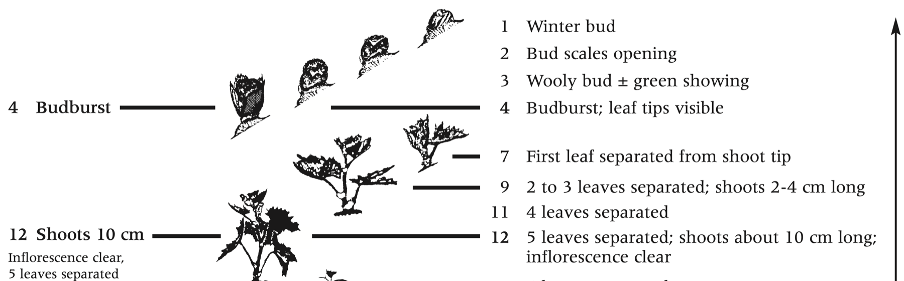

| Teil | Zeit | Inhalt |
|---|---|---|
| Einleitung | 1 Min. | Aufgabe und FlächeTask and plot |
| Folie 1: Gelände | 4 Min. | Fragen 1 und 2Questions 1 and 2 |
| Folie 2: Frost | 4 Min. | Fragen 1, 3 und 4Questions 1, 3 and 4 |
| Schluss | 1 Min. | Nächste Schritte, KINext steps, AI |
| der Austrieb | die Rebe beginnt zu wachsenbudbreak · la brotación |
| der Hangfuß | unten am Hangfoot of the slope · el pie de la ladera |
| die Kaltluft | kalte Luft, sie ist schwercold air · el aire frío |
| die Wärmesumme | Wärme pro Tag, addiert ab 1. Januar (GDD)heat sum · la suma de calor |
| die Schwelle | diese Zahl muss die Summe erreichenthreshold · el umbral |
| im Mittel | im Durchschnitton average · de media |
| daneben liegen | falsch sein, um ... Tageto be off by · equivocarse por |
| unterschätzen | zu wenig sehenunderestimate · subestimar |
Einleitung · 1 Min.
„Die Frage war: Wie hoch ist das Frostrisiko von dieser Fläche? Mit freien Daten. Die Fläche liegt in Kröv an der Mosel. Sie ist 7,72 Hektar groß. Es ist ein Weinberg. Ich zeige zuerst das Gelände. Dann zeige ich den Frost."
"The question was: how high is the frost risk of this plot? With free data. The plot is in Kröv on the Moselle. It is 7.72 hectares. It is a vineyard. First I show the terrain. Then I show the frost."Was ich sage · Folie 1 · ca. 4 Min.
„Für das Gelände nutze ich das DGM1. Das ist ein Höhenmodell von Rheinland-Pfalz. Es hat einen Wert pro Meter.
Links sehen Sie die Fläche. Sie ist ein steiler Hang nach Süden. Die Neigung ist im Mittel 46 Prozent. Unten liegt die Mosel.
Das DLR sagt: In klaren, ruhigen Nächten fließt kalte Luft nach unten. Sie bleibt unten am Hang.
Rechts sehen Sie den TPI. Blau heißt: tiefer als die Umgebung. Das Blau ist unten an der Fläche. Dort sammelt sich die kalte Luft. Das ist ein Hinweis. Es ist keine Messung."
"For the terrain I use the DGM1. It is a height model of Rhineland-Palatinate. It has one value per metre. On the left you see the plot. It is a steep slope to the south. The slope is 46 percent on average. The Moselle is below. DLR says: on clear, calm nights cold air flows down. It stays at the bottom of the slope. On the right you see the TPI. Blue means: lower than the surroundings. The blue is at the bottom of the plot. Cold air collects there. It is a hint. It is not a measurement."Was ich sage · Folie 2 · ca. 4 Min.
„Für das Wetter nutze ich ERA5-Land. Das ist ein Wettermodell. Ich habe Werte für jede Stunde seit 1976.
Frost ist nur nach dem Austrieb gefährlich. Den Austrieb nehme ich vom Deutschen Wetterdienst in Ürzig. Ürzig ist 7 Kilometer weit weg, im gleichen Tal.
Ab minus 1,5 Grad gibt es schwere Schäden. Das sagt das DLR.
Oben sehen Sie 50 Jahre. In 19 Jahren gab es Frost. In 9 Jahren war er stark. Die Rebe treibt heute etwa 3 Wochen früher aus. Darum ist sie länger in Gefahr.
Dann habe ich geprüft. Die Station Traben-Trarbach ist 1 Kilometer von der Fläche weg. Sie steht auch am Steilhang. Unten links sehen Sie das Modell, rechts die Station. Die Station hat viermal mehr Frostnächte: 65 statt 16. Starken Frost gab es an der Station in 8 von 18 Jahren. Im Modell nur in 3. Das Modell ist im Mittel 2,8 Grad zu warm. Es unterschätzt den Frost.
Mein Ergebnis: mittleres bis hohes Risiko. Unten am Hang ist es am höchsten. Vor einem Vertrag würde ich Sensoren in die Fläche stellen."
"For the weather I use ERA5-Land. It is a weather model. I have values for every hour since 1976. Frost is only dangerous after budbreak. I take budbreak from the German Weather Service in Ürzig. Ürzig is 7 kilometres away, in the same valley. From minus 1.5 degrees there is severe damage. DLR says that. At the top you see 50 years. In 19 years there was frost. In 9 years it was severe. Today the vine buds about 3 weeks earlier. So it is in danger for longer. Then I checked. The Traben-Trarbach station is 1 kilometre from the plot. It is also on a steep slope. Bottom left you see the model, right the station. The station has four times more frost nights: 65 instead of 16. Severe frost at the station in 8 of 18 years. In the model only in 3. The model is 2.8 degrees too warm on average. It underestimates frost. My result: medium to high risk. It is highest at the bottom of the slope. Before a contract I would put sensors in the plot."Schluss · 1 Min.
„Nächste Schritte: Erstens, Sensoren in der Fläche, oben und unten, für einen Frühling. Zweitens, das Modell mit der Station korrigieren. Satellitenbilder habe ich auch geprüft. Mit 10 Metern sieht man den Frost nicht. KI habe ich für Erklärungen, Code und Literatur genutzt. Die Ergebnisse habe ich selbst geprüft."
"Next steps: first, sensors in the plot, top and bottom, for one spring. Second, correct the model with the station. I also checked satellite images. At 10 metres you cannot see the frost. I used AI for explanations, code and literature. I checked the results myself."Wo sind die Grenzen? Wie prüfen Sie? (Frage 3)
„Es gibt drei Grenzen. Erstens: Das Modell hat einen Wert für 9 mal 9 Kilometer. Die Fläche ist viel kleiner. Das Modell sieht die kalte Luft am Hangfuß nicht. In Frostnächten ist es im Mittel 2,8 Grad zu warm. [2, 3, 5]
Zweitens: Den Austrieb schätze ich. Im Vergleich mit dem DWD liege ich im Mittel 11 Tage daneben. [3, 4]
Drittens: Den Schaden in Prozent kann ich nicht berechnen. Er hängt vom Stadium der Rebe ab, und das kenne ich nicht für jede Nacht. Darum zeige ich die Gefahr, nicht den Verlust. [13]
Geprüft habe ich auf drei Wegen: mit der Messstation, mit dem Austrieb vom DWD und mit dem Frostjahr 2017. Alles passt zusammen." [4, 5, 9]
"There are three limits. First: the model has one value for 9 by 9 kilometres. The plot is much smaller. The model does not see the cold air at the foot of the slope. On frost nights it is 2.8 degrees too warm on average. Second: I estimate budbreak. Compared with DWD I am off by 11 days on average. Third: I cannot calculate the damage in percent. It depends on the stage of the vine, and I don't know that for each night. So I show the hazard, not the loss. I checked in three ways: with the station, with DWD budbreak and with the frost year 2017. Everything fits."Ihr Fazit? (Schlusssatz)
„Mit freien Daten sehe ich ein mittleres bis hohes Frostrisiko, unten am Hang am höchsten [9]. Die Station 1 km daneben hatte starken Frost in 8 von 18 Jahren, das Modell sieht davon nur 3 [3, 5]. Meine Grenzen: Ich kenne die Rebsorte nicht [4], ich habe keine Messung in der Fläche und keine Schadensdaten [10]. Darum würde ich vor dem Vertrag Sensoren aufstellen und den Winzer nach Sorte, Frostschutz und alten Schäden fragen [9]."
"With free data I see a medium to high frost risk, highest at the bottom of the slope [9]. The station 1 km away had severe frost in 8 of 18 years, the model sees only 3 of them [3, 5]. My limits: I don't know the variety [4], I have no measurement in the plot and no damage data [10]. So before the contract I would install sensors and ask the grower about variety, frost protection and past damage [9]."Welche Rebsorte?
„Die Sorte ist nicht bekannt. Der DWD in Ürzig beobachtet Müller-Thurgau und Riesling. Ich nehme den frühesten Austrieb, meistens Müller-Thurgau. Das ist vorsichtig: Ich zähle eher mehr Frost. Riesling treibt im Mittel etwa 6 Tage später aus." [4]
"The variety is not known. DWD at Ürzig observes Müller-Thurgau and Riesling. I take the earliest budbreak, mostly Müller-Thurgau. That is cautious: I count rather more frost. Riesling buds about 6 days later on average." [4]Warum „mittel bis hoch"?
„Es gibt keine feste Skala. Ich schaue auf drei Dinge. Die Station hat starken Frost in 8 von 18 Jahren. Das ist hoch. Das Modell hat starken Frost in 9 von 50 Jahren. Das ist mittel. Die Station hat aber nur 18 Jahre. Darum sage ich: mittel bis hoch." [3, 5]
"There is no fixed scale. I look at three things. The station has severe frost in 8 of 18 years. That is high. The model has severe frost in 9 of 50 years. That is medium. But the station has only 18 years. So I say: medium to high." [3, 5]Wie funktioniert die Wärmesumme (GDD)?
„Jeden Tag rechne ich: Mitteltemperatur minus 7,5 Grad. Das addiere ich ab 1. Januar. Wenn die Summe 40 erreicht, ist Austrieb. Beispiel: 16 und 6 Grad. Mittel ist 11. Minus 7,5 ist 3,5." Nur wenn der DWD kein Datum hat. [4]
"Every day I calculate: mean temperature minus 7.5 degrees. I add it up from 1 January. When the sum reaches 40, that is budbreak. Example: 16 and 6 degrees. Mean is 11. Minus 7.5 is 3.5." Only when DWD has no date. [4]Warum 7,5 Grad und 40?
„Ich habe die Werte mit echten Daten getestet. Der DWD hat in Ürzig den Austrieb beobachtet, 19 Jahre lang. Mit 7,5 Grad und 40 liegt mein Modell im Mittel 11 Tage daneben. Mit 10 Grad war der Austrieb 3 Wochen zu spät. Mit 5 Grad war es genauso gut. Die Basis ist also nicht so wichtig. Das sagt auch eine Studie: Nendel, 2010." [4, 12]
| Basis | beste Schwelle | Fehler (ERA5, 19 Jahre) |
|---|---|---|
| 0 °C | 485 | 10,9 Tage |
| 5 °C | 125 | 10,7 Tage |
| 7,5 °C | 40 | 10,7 Tage |
| 10 °C | 10 | 10,1 Tage |
Wie haben Sie kalibriert?
„Ich habe verschiedene Zahlen getestet: 20, 30, 40, 50 und so weiter. Für jede Zahl habe ich den Austrieb berechnet. Dann habe ich mit dem echten Datum vom DWD in Ürzig verglichen, 19 Jahre lang. Ich habe die Zahl mit dem kleinsten Fehler genommen." [3, 4, 12]
| Jahr | DWD (echt) | Schwelle 30 | 40 | 50 |
|---|---|---|---|---|
| 2018 | 2. April | 8. April | 10. April (+8 Tage) | 12. April |
| 2022 | 9. April | 27. März | 29. März (−11 Tage) | 13. April |
Warum nicht 50?
„40 und 50 passen fast gleich gut, der Unterschied ist etwa 1 Tag. Ich nehme 40, weil das vorsichtig ist: Der Austrieb ist eher früher, und ich zähle eher mehr Frost." [3, 4]
"40 and 50 fit almost equally well, the difference is about 1 day. I take 40 because it is cautious: budbreak is rather earlier, and I count rather more frost." [3, 4]Warum 60 für die Station?
„Die Station hat andere Daten. Darum braucht sie eine andere Zahl. Mit 40 war der Austrieb 11 Tage zu früh. Mit 60 nur 2 Tage. Aber es sind nur 13 Jahre." [4, 5, 12]
"The station has different data. So it needs a different number. With 40 budbreak was 11 days too early. With 60 only 2 days. But it is only 13 years." [4, 5, 12]Sind 11 Tage Fehler nicht viel?
„Ja, das ist eine Grenze. Mit Daten von der Fläche wären etwa 3 Tage möglich." [12]
"Yes, that is a limit. With data from the plot about 3 days would be possible." [12]Wie groß wäre der Schaden?
„Das zeigen meine Daten nicht. Ich zeige die Gefahr, nicht den Schaden. Nach einem Frost zählt man die kaputten Triebe. Die AWRI sagt: Unter 30 Prozent kaputt, dann bis 20 Prozent weniger Ernte. Über 60 Prozent kaputt, dann mindestens 40 Prozent weniger." [10, S. 3]
"My data does not show that. I show the hazard, not the damage. After a frost you count the damaged shoots. AWRI says: below 30 percent damaged, up to 20 percent less harvest. Above 60 percent damaged, at least 40 percent less." [10, p. 3]Wie groß war der Schaden in den Frostjahren?
„Den Schaden auf der Fläche kenne ich nicht. Aber die amtliche Ernte im Bereich Bernkastel war in Jahren mit starkem Frost im Durchschnitt 11 Prozent niedriger, 2017 sogar 32 Prozent. Das passt zu meinen Daten, ist aber kein Beweis: Auch andere Dinge senken die Ernte." [5, 15]
| Jahr | kälteste Nacht (Station) | Ernte im Vergleich zum 10-Jahres-Mittel |
|---|---|---|
| 2012 | −5,1 °C | −21 % |
| 2017 | −4,9 °C | −32 % |
| Jahre mit starkem Frost (8) | ≤ −1,5 °C | im Durchschnitt −11 % |
| Jahre ohne starken Frost (10) | > −1,5 °C | im Durchschnitt −1 % |
Sind 2 Frostnächte schlimm, oder braucht es 15?
„Wichtig ist nicht die Zahl der Frostnächte. Wichtig ist die kälteste Nacht und das Stadium der Rebe. Eine Nacht bei minus 5 Grad kann mehr schaden als 15 Nächte bei minus 1 Grad." [9, 10, 13]
| Stadium | 10 % der Knospen tot | 90 % tot |
|---|---|---|
| Austrieb | −3,9 °C | −8,9 °C |
| 1. Blatt | −2,8 °C | −6,1 °C |
| 2. Blatt | −2,2 °C | −5,6 °C |
| 3. Blatt | −2,2 °C | −3,3 °C |
| 4.–5. Blatt | −2,2 °C | −2,8 °C |

Stadien vom Winterauge bis 5 Blätter (E-L 1–12) [14]: So sieht die Rebe in der Frostzeit aus.
„Diese Werte sind aus dem Labor [13]. Dann zählt man die kaputten Triebe: über 60 Prozent kaputt heißt mindestens 40 Prozent weniger Ernte [10]. An der Station gab es in 4 von 18 Jahren Nächte bei −2,8 °C oder kälter, zum Beispiel 2017 mit −4,9 °C [5]."
"What matters is not the number of frost nights. What matters is the coldest night and the stage of the vine. One night at minus 5 degrees can do more damage than 15 nights at minus 1 degree. These values are from the lab [13]. Then you count the damaged shoots: more than 60 percent damaged means at least 40 percent less harvest [10]. At the station there were nights at −2.8 °C or colder in 4 of 18 years, for example 2017 with −4.9 °C [5]." Table: UC/Snyder p. 1 (Proebsting et al., WSU), converted from °F; lab values, not well checked in the field; variety not given.Und Frost vor dem Austrieb?
„Vor dem Austrieb sind die Knospen viel härter. Laut Labortabelle sterben bei geschwollenen Knospen erst ab −6 °C etwa 10 Prozent. An der Station gab es das nur einmal in 18 Jahren: 2018, mit −7,9 °C. Darum zähle ich diesen Frost nicht mit." [5, 10, 13]
| Stadium | 10 % tot | 90 % tot |
|---|---|---|
| Winterruhe | < −18 °C | < −18 °C |
| erstes Schwellen | −10,6 °C | −19,4 °C |
| Knospe geschwollen | −6,1 °C | −12,2 °C |
| Austrieb | −3,9 °C | −8,9 °C |
Strahlungsfrost oder Advektionsfrost?
„Strahlungsfrost: klare Nacht, Wolken unter etwa 37 Prozent, Wind unter 5,4 Kilometer pro Stunde. Er ist häufiger und macht die meisten Schäden. Das sagt das DLR. An der Station war es in allen Frostnächten fast windstill: im Mittel 0,2 km/h. Das Modell sieht hier zu viel Wind. Darum werte ich die Frostart nicht aus." [5, 9]
"Radiation frost: clear night, clouds below about 37 percent, wind below 5.4 km/h. It is more frequent and does most damage. DLR says that. At the station it was almost calm on all frost nights. The model sees too much wind here. So I do not evaluate the frost type." [5, 9]Gibt es Frost am Tag, aber nicht in der Nacht?
„Ich habe das geprüft. Nach dem Austrieb gab es keinen Frost am Tag ohne Frost in der Nacht. Weder im Modell, 50 Jahre, noch an der Station, 18 Jahre." [3, 5]
"I checked it. After budbreak there was no frost during the day without frost at night. Neither in the model, 50 years, nor at the station, 18 years." [3, 5]Warum nicht nur die Station?
„Die Station misst erst seit 2008. Das Modell hat 50 Jahre. Die Station zeigt mir, wie viel das Modell unterschätzt." [3, 5]
"The station only measures since 2008. The model has 50 years. The station shows me how much the model underestimates." [3, 5]Und Frost im Herbst?
„Kaum wichtig. Die Lese in Ürzig ist im Mittel am 3. Oktober. An der Station gab es im September nie Frost. Im Oktober meist erst am Ende vom Monat. Seit 2020 gar nicht." [4, 5]
"Hardly important. Harvest at Ürzig is on average on 3 October. At the station there was never frost in September. In October mostly only at the end of the month. Since 2020 none." [4, 5]Ist der TPI sicher?
„Die Höhendaten sind sehr genau. Der TPI ist aber nur ein Hinweis. Sicher ist es erst mit Sensoren." [6, 7]
"The height data are very accurate. But the TPI is only a hint. It is certain only with sensors." [6, 7]